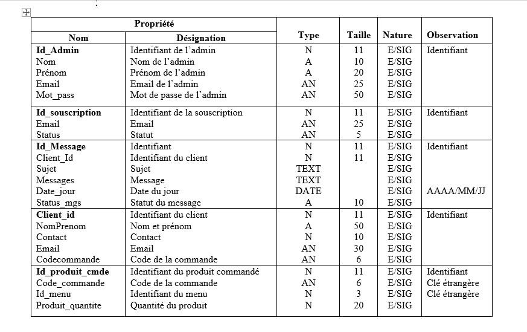
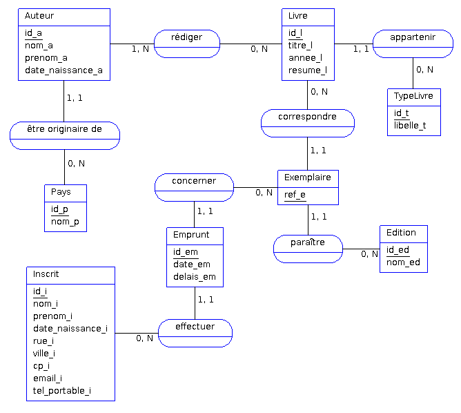
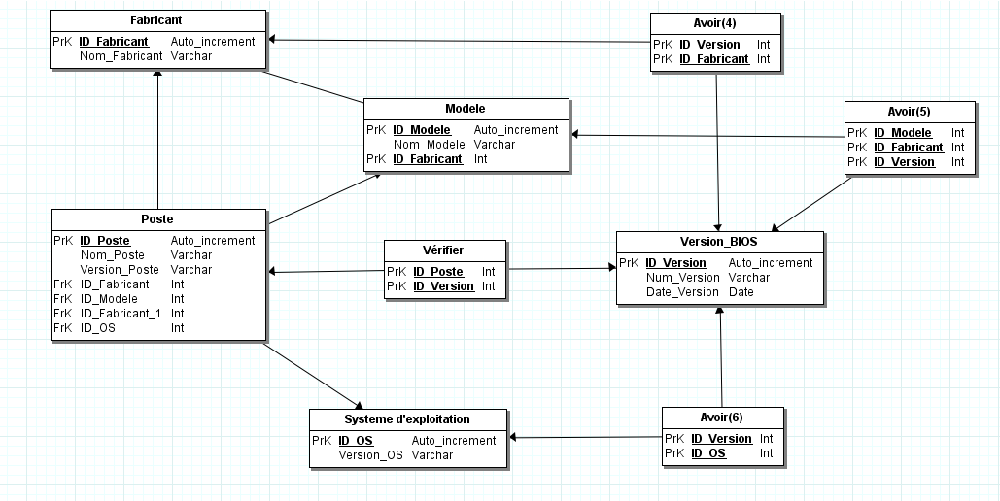

La méthode Merise
Qu'est ce que la méthode Merise?
La méthode Merise est une approche de modélisation de système d'information qui a été largement utilisée dans les années 1970 et 1980. Elle se concentre sur la structuration et la formalisation des données, des processus et des contraintes d'un système d'information. La méthode Merise utilise des modèles conceptuels, logiques et physiques pour représenter les différents aspects d'un système, ce qui facilite la conception, la gestion et l'évolution des systèmes d'information.
Dictionnaire de données
C'est une étape intermédiaire qui peut avoir son importance, surtout si vous êtes plusieurs à travailler sur une même base de données, d'un volume important.
Le dictionnaire des données est un document qui regroupe toutes les données que vous aurez à conserver dans votre base (et qui figureront donc dans le MCD). Pour chaque donnée, il indique :
- le code mnémonique : il s'agit d'un libellé désignant une donnée (par exemple «titre_l» pour le titre d'un livre) ;
- la désignation : il s'agit d'une mention décrivant ce à quoi la donnée correspond (par exemple «titre du livre») ;
-
le type de donnée :
- A ou Alphabétique : lorsque la donnée est uniquement composée de caractères alphabétiques (de 'A' à 'Z' et de 'a' à 'z'),
- N ou Numérique : lorsque la donnée est composée uniquement de nombres (entiers ou réels),
- AN ou Alphanumérique : lorsque la donnée peut être composée à la fois de caractères alphabétiques et numériques,
- Date : lorsque la donnée est une date (au format AAAA-MM-JJ),
- Booléen : Vrai ou Faux ;
- TEXT : lorsque la donnée est une chaîne de caractères.
- la taille : elle s'exprime en nombre de caractères ou de chiffres. Dans le cas d'une date au format AAAA-JJ-MM, on compte également le nombre de caractères, soit 10 caractères. Pour ce qui est du type booléen, nul besoin de préciser la taille (ceci dépend de l'implémentation du SGBDR) ;
- et parfois des remarques ou observations complémentaires (par exemple si une donnée est strictement supérieure à 0, etc.).
Modèle conceptuel de données (MCD)
Le Modèle Conceptuel de Données (MCD) est une composante essentielle de la méthode Merise en ingénierie des systèmes d'information. Il offre une représentation abstraite et structurée des données, mettant en lumière les entités, leurs attributs et les relations les liant.
Grâce à sa clarté et sa concision, le MCD permet aux analystes et aux développeurs de comprendre rapidement la structure et les interactions des données au sein du système.
En intégrant des concepts tels que les entités, les associations, les cardinalités et les dépendances fonctionnelles, le MCD fournit un cadre solide pour concevoir des bases de données efficaces et évolutives.
Il garantit ainsi la cohérence et l'intégrité des données tout au long du cycle de vie du projet, assurant une gestion optimale des informations et une meilleure prise de décision.
Modèle logique de données (MLD)

Une fois le Modèle Conceptuel de Données (MCD) établi, la méthode Merise poursuit avec le Modèle Logique de Données (MLD). Ce dernier représente une étape cruciale dans le processus de conception des bases de données, car il traduit les concepts abstraits du MCD en structures de données plus concrètes, généralement sous forme de schémas relationnels.
Le passage du MCD au MLD implique une transformation des entités en tables, des attributs en colonnes et des associations en clés étrangères. Les cardinalités définies dans le MCD orientent également la création des relations et des contraintes d'intégrité dans le MLD.
insi, le MLD constitue une étape de raffinement du modèle conceptuel, où les détails techniques et les spécificités de la base de données sont pris en compte. Cette transition permet de passer d'une vision conceptuelle à une représentation plus opérationnelle, facilitant la mise en œuvre et la gestion des données dans le système informatique.
Modèle physique de données (MPD)
Après la réalisation du Modèle Logique de Données (MLD), la méthode Merise poursuit avec la conception du Modèle Physique de Données (MPD). Contrairement au MLD, qui reste principalement abstrait et indépendant du système de gestion de base de données (SGBD) choisi, le MPD se concentre sur la mise en œuvre concrète des structures de données dans un environnement spécifique.
Le MPD traduit les structures définies dans le MLD en un schéma de base de données réel, prenant en compte les caractéristiques et les contraintes propres au SGBD sélectionné. Cela inclut des aspects tels que les types de données, les index, les clés de contrainte, les règles d'intégrité et d'autres paramètres de configuration spécifiques au SGBD.
Cette étape de conception détaillée garantit une implémentation efficace et optimisée de la base de données, en tenant compte des performances, de la sécurité et de la maintenabilité du système. Le MPD constitue ainsi le lien final entre la modélisation des données et leur déploiement opérationnel dans un environnement informatique réel.